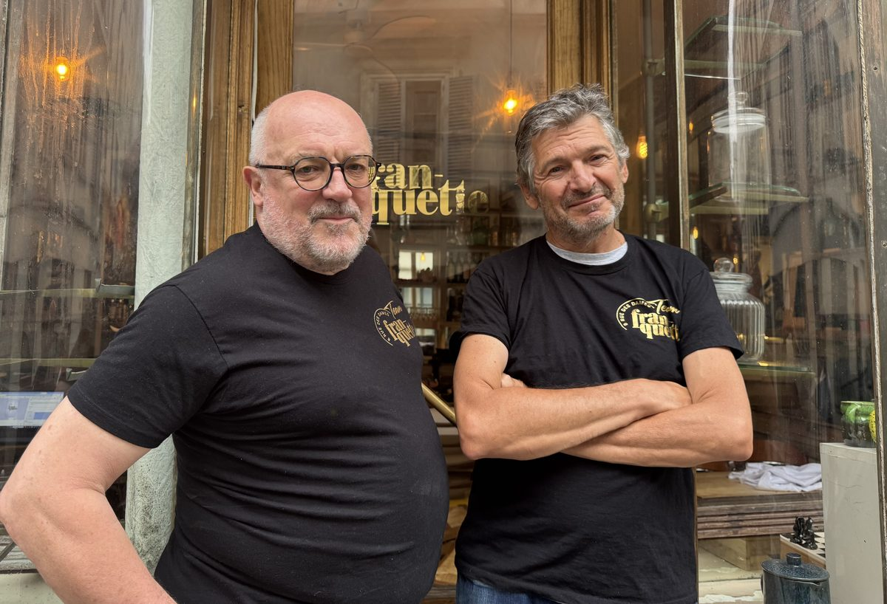

Borden om te delen · natuur- & orangewijnen
di–za vanaf 19:30 uur

In Batignolles, in een voormalige snoepwinkel die een rariteitenkabinet werd, 100 meter van de Place de Clichy, bedenkt Franquette deelborden met kosmopolitische accenten: goede, zuivere en eerlijke producten, in de geest van Slow Food.
In de kelder: biologische, biodynamische en natuurlijke wijnen van bevriende wijnboeren!
In de keuken staat chef Jacques, teruggekeerd uit Amerika. Als chef en eigenaar van Jac Bistro in São Paulo brengt hij een Braziliaanse toets in de keuken van Franquette. Een heel oude vriend van Philippe — van school, van samenwonen of van reizen rond de wereld, van Guyana tot Guinee via Turkmenistan, om maar de grappigste te noemen.
Reserveer nu8 rue des Dames
75017 Paris
Routebeschrijving
Dinsdag – zaterdag
Vanaf 19.30 uur